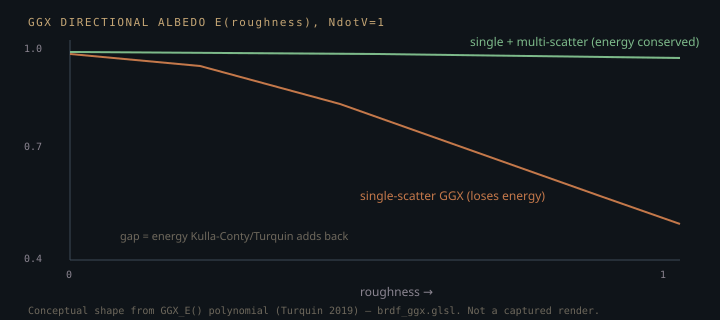

Monograph · Tree · ← Module hub · PBR metallic-roughness
materials
PBR metallic-roughness
F0, ORM convention, roughness floors.
The lie artists can paint
The physically-correct microfacet BRDF wants a spectral, complex index of refraction at every surface point. No artist authors that. OHAO collapses it to three scalars an artist can paint into textures — base color, metallic, roughness — and reconstructs the physics at shade time. This page is about what that reconstruction gets right, and the one thing about OHAO that surprises people: it reconstructs the *same three sliders* twice, on two different BRDF stacks that do not agree.
F0: the 0.04 that is not arbitrary
F0 is the Fresnel reflectance at normal incidence — the fraction of light a flat surface bounces straight back when you look at it head-on. For a dielectric it is fixed by the index of refraction n through F0 = ((n - 1)/(n + 1))^2. Common dielectrics sit near n = 1.5, so:
Metals have no meaningful single-scalar IOR in this model and absorb all transmitted light within nanometers, so they get zero diffuse and reuse base color as F0. Both pipelines collapse the two cases into one branch-free `mix`; in the path tracer it is inline at the closest-hit:
vec3 F0 = mix(vec3(0.04), albedo, metallic);shaders/rt/pt_raygen.rgen:276The intermediate values of that lerp (metallic = 0.5) are not physical — no real material is half-conductor. The path tracer keeps the slider continuous anyway, because a continuous, monotonic control is all an artist needs and the pure 0/1 endpoints are exactly right. The deferred pipeline makes the opposite call — see below — which is the first place the two stacks diverge.
One reduction, two BRDFs
Here is the fact that governs everything else on this page. OHAO's offline/realtime **path tracer** and its **deferred rasteriser** do not share a BRDF file. The path-tracer raygen shaders include `ggx_aniso.glsl`:
float ggxD_anisoOrIso(vec3 N, vec3 H, float NdotH, float roughness,shaders/includes/material/ggx_aniso.glsl:31while the deferred and forward fragment shaders call `evaluateBRDF` in `brdf_ggx.glsl`. They agree on F0 and on being "GGX metallic-roughness," and they diverge on almost everything expensive: the geometry term, energy compensation, and even how the metallic slider is interpreted. The rest of this page walks each stack and then the gap between them.
The path tracer's specular
The flagship offline path is single-scatter GGX with two refinements a hobby tracer usually skips. First, the D term is anisotropy-aware; at anisotropy = 0 it falls back to the exact isotropic GGX so older reference renders stay bit-identical. The anisotropy direction is not read from a tangent attribute — it is reconstructed by projecting world-up onto the surface:
t = normalize(ref - n * dot(ref, n));shaders/includes/material/ggx_aniso.glsl:27That detail matters more than it looks: Frisvad's cheaper basis varies discontinuously with the normal, so on a sphere neighbouring pixels get scrambled tangents and the anisotropic highlight averages back into something that looks isotropic. Projecting a fixed world axis gives a smoothly-varying tangent (a lathe-turned look on spheres), which is the whole point of shipping anisotropy.
Second, specular is importance-sampled from the *visible* normal distribution (Heitz 2018), not a crude cosine lobe:
vec3 sampleGGXVNDF(vec3 Ve, float ax, float ay, vec2 u) {shaders/includes/material/ggx_aniso.glsl:107With a VNDF sample the Monte-Carlo estimator weight `f·cosθ / pdf` collapses to a single height-correlated Smith ratio once Fresnel is factored out:
so the shader never evaluates D or the pdf separately at the sampled direction — it returns exactly that ratio, which is `≤ 1` and tends to `1` at the smooth limit:
float smithG2overG1GGX(float NdotV, float NdotL, float alpha) {shaders/includes/material/ggx_aniso.glsl:90The deferred pipeline's specular
The rasteriser cannot importance-sample per pixel, so `brdf_ggx.glsl` evaluates the full analytic Cook-Torrance instead, and spends the saved rays on quality the path tracer gets for free from sampling. Its geometry term is the height-correlated Smith form (Heitz 2014), which accounts for masking and shadowing being correlated on the same microsurface rather than independent:
float geometrySmithCorrelated(float NdotV, float NdotL, float roughness) {shaders/includes/brdf/brdf_ggx.glsl:66Then — the part most hobby renderers omit — it adds back the energy single-scatter GGX loses at high roughness (Kulla-Conty 2017 / Turquin 2019). Single-scatter models exactly one bounce off the microsurface, so rough metal comes out visibly too dark; the compensation term redistributes the lost energy:
where E is the directional albedo of single-scatter GGX, taken from a polynomial fit rather than a lookup table:
float Ems = (1.0 - E_o) * (1.0 - E_i); // energy lost by single scattershaders/includes/brdf/brdf_ggx.glsl:159vec3 Favg = surface.F0 + (1.0 - surface.F0) / 21.0; // average Fresnelshaders/includes/brdf/brdf_ggx.glsl:160
The deferred stack also reinterprets the metallic slider itself. Where the path tracer keeps it continuous, the deferred surface setup sharpens it toward the pure endpoints:
float sharpenedMetallic = smoothstep(0.35, 0.65, metallic);shaders/includes/brdf/brdf_common.glsl:44so a painted metallic of 0.5 reads as a cleaner dielectric-or-metal decision under raster lighting — cheaper to make look right, at the cost of the smooth half-metal ramp the path tracer preserves.
Where the two paths disagree
Because multi-scatter compensation lives only in `brdf_ggx.glsl`, and the flagship offline path tracer runs `ggx_aniso.glsl` with no such term, a rough metal is energy-compensated in the deferred viewport but single-scatter-dark in the final path-traced frame. Look-dev done against the fast deferred preview will therefore *under*-brighten rough metals for the offline render. This is a real portability gap, not a matched pair — and it is the honest reason the two stacks are documented as two, not one. Closing it means porting the Kulla-Conty term into the raygen, not pretending it is already there.
The one real k-remap, and where it is not
A Smith-Schlick geometry approximation needs a roughness remap, and this is where a common myth creeps into engine docs. OHAO's live geometry terms — the path tracer's `smithG2overG1GGX` and the deferred `geometrySmithCorrelated` — are both height-correlated Smith and need *no* `k` remap at all. The only `k`-remap in the tree feeds the deferred IBL split-sum BRDF LUT:
float k = (a * a) / 2.0;shaders/compute/brdf_lut.comp:51That LUT is precomputed once and sampled by the deferred lighting pass for image-based reflections; the path tracer needs no LUT because it integrates the environment directly through MIS. (The `(rough + 1)^2 / 8` direct-lighting remap that appears in many tutorials exists in `brdf_ggx.glsl` too, but in `geometrySchlickGGX`, which has no callers — it is dead code, not the shipping path, and is not cited here as if it were.)
Where the packed roughness comes from
At the closest-hit shader the material arrives packed into a payload vector, and the unpack carries a backward-compatibility story worth knowing before you touch it. The current encoding is continuous roughness in `.x`, metallic in `.y`:
if (att.x < 0.0 && att.y < 1e-4) {shaders/includes/pbr_unpack.glsl:9A legacy signed encoding (negative `.x` meant "binary metal") is still accepted when `.y` is ~0, so old shader-binding-table payloads authored mid-session do not silently break. Removing that branch is safe only once every producer writes the new form.
Contracts
- Both stacks compute F0 = mix(0.04, albedo, metallic); metals therefore get zero diffuse and dielectrics F0 = 0.04. Violating this double-counts or loses energy.
- Roughness is clamped away from 0 (`max(roughness, 0.01)` in the unpack) so the specular lobe never becomes a zero-width delta that fireflies in the path tracer.
- The path tracer (`ggx_aniso.glsl`) and deferred pipeline (`brdf_ggx.glsl`) are NOT energy-matched at high roughness: multi-scatter compensation is deferred-only. Treat the deferred preview as an approximation of the offline result for rough metals, not ground truth.
- The metallic slider is continuous in the path tracer but sharpened via `smoothstep(0.35, 0.65)` in the deferred surface setup; mid-slider values render differently between the two.
Source files
shaders/rt/pt_raygen.rgenshaders/includes/material/ggx_aniso.glslshaders/includes/brdf/brdf_ggx.glslshaders/includes/brdf/brdf_common.glslshaders/compute/brdf_lut.compshaders/includes/pbr_unpack.glslParent hub for the full pipeline narrative; this page is the file-level design unit. Sitemap · hover glossary terms anywhere.